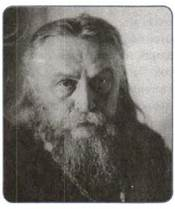
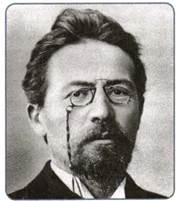
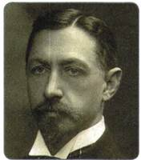
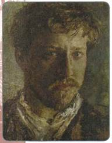
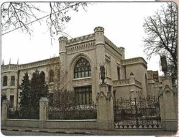
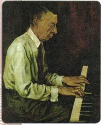
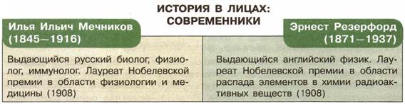

Материал для самостоятельной работы и проектной деятельности учащихся
В чём состояли главные особенности культуры Серебряного века в России?
1. Духовное состояние общества
Вступая в XX в., Россия менялась. Менялся и мир. Индустриальная эпоха диктовала свои условия и нормы жизни. Под их натиском рушились традиционные ценности и представления людей. Современники с тревогой отмечали, что нарушается гармония между природой и обществом, человек утрачивает свою индивидуальность, торжествует стандартизация всех сторон жизни. Возникали растерянность, тревожное чувство надвигающейся катастрофы. Представления о добре и зле, истине и лжи, прекрасном и безобразном, которыми жили предшествующие поколения, казались несостоятельными и требовали пересмотра.
Вспомните, как воспринимали меняющийся мир многие деятели европейской культуры начала XX в. Каков смысл названия ставшей знаменитой книги немецкого философа О. Шпенглера «Закат Европы»?
Философия, наука, литература, искусство искали ответы на не имевшие очевидных решений вопросы. Российская культура переживала удивительный расцвет. Он охватил все виды творческой деятельности, породил выдающиеся художественные произведения и научные открытия, новые направления творческого поиска, открыл блестящие имена, ставшие гордостью не только русской, но и мировой культуры, науки и техники. Начало XX в. называют Серебряным веком русской культуры.
2. Просвещение
Модернизация предъявляла высокие требования к уровню образования людей.
К чести правительства, государственные расходы на народное образование с 1900 по 1915 г. увеличились более чем в 5 раз.
Городские и сельские начальные школы постепенно вытесняли церковноприходское образование. Росло число гимназий и реальных училищ. В гимназиях было увеличено количество часов на изучение естественно-математических предметов. Выпускники реальных училищ получили право поступать в высшие технические учебные заведения, а после сдачи дополнительного экзамена по латинскому языку — на физико-математические и медицинские факультеты университетов. По инициативе предпринимателей создавались коммерческие училища, которые давали общеобразовательную и специальную подготовку. В отличие от гимназий и реальных училищ, обучение юношей и девушек в них было совместным.
Возросло количество средних специальных учебных заведений: промышленных, технических, железнодорожных, горных, судоходных, землемерных, сельскохозяйственных и др. Расширилась сеть высших учебных заведений: новые технические вузы появились в Петербурге, Новочеркасске, Томске. В Саратове был открыт университет.
Начали работу педагогические институты в Москве и Петербурге, свыше 30 высших женских курсов, положивших начало массовому высшему женскому образованию.
К 1914 г. в России действовало более 100 высших учебных заведений, в которых обучалось свыше 120 тыс. человек. Свыше 60% студентов не принадлежали к дворянскому сословию.
3. Наука
В начале XX в. Россия внесла весомый вклад в мировой научно-технический прогресс.
Физик П. Н. Лебедев впервые в мире установил общие закономерности, присущие волновым процессам различной природы (звуковым, электромагнитным, гидравлическим и др.). Он создал первую в России физическую школу.
Значительные открытия в теории и практике самолётостроения сделал Н. Е. Жуковский. Учеником и соратником Жуковского был выдающийся механик и математик С. А. Чаплыгин. У истоков космонавтики стоял учитель калужской гимназии К. Э. Циолковский. В 1903 г. он опубликовал ряд блестящих трудов, обосновавших возможность космических полётов.
Выдающийся русский учёный В. И. Вернадский получил мировую известность благодаря энциклопедическим трудам, послужившим основой для новых научных направлений в геохимии, биохимии, радиологии. Его учения о биосфере и ноосфере заложили основу современной экологии.
Русский физиолог И. П. Павлов создал учение о высшей нервной деятельности, об условных рефлексах. В 1904 г. ему была присуждена Нобелевская премия за исследования в области физиологии пищеварения. В 1908 г. Нобелевскую премию получил И. И. Мечников за труды по иммунологии и инфекционным заболеваниям.
Начало XX в. — время расцвета российской исторической науки. Крупнейшими специалистами в области отечественной истории были В. О. Ключевский, А. А. Корнилов, Н. П. Павлов-Сильванский, С. Ф. Платонов. Проблемами всеобщей истории занимались П. Г. Виноградов, Р. Ю. Виппер, Е. В. Тарле. Мировую известность получила русская школа востоковедения.
Большое место в трудах русских философов занимала русская идея — проблемы самобытности исторического пути России и своеобразия её духовной жизни, предназначения (Н. А. Бердяев, С. Н. Булгаков, В. С. Соловьёв, П. А. Флоренский).
4. Литература
Литература начала XX в. отмечена многообразием художественных жанров, стилей и методов.
В традициях русской реалистической школы работал Л. Н. Толстой. В своих последних произведениях он пытался показать, как может личность противостоять закоснелым нормам жизни («Живой труп», «Отец Сергий», «После бала»). Его письма-обращения к Николаю II, публицистические статьи проникнуты болью и тревогой за судьбу страны, стремлением воздействовать на власть, преградить дорогу злу и защитить всех притесняемых. Он верил, что насилие насилием устранить невозможно.
А. П. Чехов создал в эти годы пьесы «Три сестры» и «Вишнёвый сад», в которых отразил происходившие в начале века социальные изменения. И. А. Бунин с болью писал об оскудении дворянских усадеб, о переменах, происходящих в душах людей («Деревня», «Суходол», цикл «крестьянских» рассказов). А. И. Куприн показал неприглядную сторону армейского быта: бесправие солдат, духовную опустошённость офицеров («Поединок»). Впервые литература обратилась к образам рабочих. Зачинателем этой темы стал М. Горький («Враги», «Мать»). В первое десятилетие XX в. в русскую поэзию пришла плеяда талантливых крестьянских поэтов — С. А. Есенин, Н. А. Клюев, С. А. Клычков.
Всё громче звучали голоса поэтов и писателей нового поколения, протестовавших против главного принципа реалистического искусства — непосредственного изображения окружающего мира. Поэты-символисты объявили войну материалистическому мировоззрению, утверждая, что вера, религия — краеугольные камни человеческого бытия и искусства. Сначала символизм принял форму декаданса: в поэзии преобладали настроения тоски и безнадёжности, резко выраженный индивидуализм. Таковы ранние произведения К. Д. Бальмонта, А. А. Блока, В. Я. Брюсова. После 1909 г. наступил новый этап. Символизм окрасился в славянофильские тона, демонстрируя презрение к «лишённому души» Западу. Символисты попытались проникнуть в глубины души народа и в русской народной жизни увидели возможность обновления, второго рождения России. Эти мотивы особенно ярко звучали в творчестве А. А. Блока (поэтические циклы «На поле Куликовом», «Родина») и А. Белого («Серебряный голубь», «Петербург»).

С. Н. Булгаков

А. П. Чехов

И. А. Бунин
Акмеисты (от греч. акме — высшая степень чего-либо, цветущая сила), напротив, отстаивали самоценность реальной жизни. Н. С. Гумилёва, А. А. Ахматову, О. Э. Мандельштама отличали безупречный вкус, красота и отточенность художественного слова, которые они считали главными в поэзии.
Русская художественная культура начала XX в. испытывала и влияние авангардизма, объявившего о разрыве с культурными ценностями прошлого и провозгласившего «новое искусство». В России наиболее яркими представителями авангарда были футуристы (от лат. футурум — будущее). Их интересовало не столько содержание, сколько форма стихосложения. Футуристы придумывали новые слова, использовали вульгарную лексику, профессиональный жаргон, язык документа, плаката и афиши. Характерны названия футуристических сборников — «Пощёчина общественному вкусу», «Дохлая Луна», «Рыкающий Парнас». Интересных поэтов собрала петербургская группа «Гилея» — В. Хлебников, Д. Д. Бурлюк, А. Е. Кручёных, В. В. Маяковский, В. В. Каменский. Ошеломляющим успехом пользовались сборники стихов и публичные выступления И. В. Северянина, возглавлявшего Ассоциацию эгофутуристов.
5. Живопись
Прочные позиции в русской живописи удерживали представители реалистической школы. Действовало «Товарищество передвижных художественных выставок». И. Е. Репин закончил в 1906 г. грандиозное полотно «Торжественное заседание Государственного совета». Историческая живопись В. И. Сурикова вдохновлялась интересом к народу, к человеку в истории. Верность реализму хранили М. В. Нестеров, братья В. М. и А. М. Васнецовы и др.
Однако законодателем моды стал модерн. Он повлиял на творчество таких крупных художников-реалистов, как К. А. Коровин, В. А. Серов.
Сторонники нового стиля объединились в творческом обществе «Мир искусства». «Мирискусники» утверждали, что искусство — это самостоятельная, самоценная сфера человеческой деятельности и оно не должно зависеть от политических и социальных влияний. Его задача — привносить красоту в жизнь людей. За длительный период (объединение возникло в 1898 г. и просуществовало с перерывами до 1925 г.) в «Мир искусства» входили почти все крупнейшие русские художники — А. Н. Бенуа, Л. С. Бакст, Е. Е. Лансере, Н. К. Рерих, К. А. Сомов.
В 1907 г. в Москве открылась выставка под названием «Голубая роза», в которой приняли участие 16 художников (П. В. Кузнецов, Н. Н. Сапунов, М. С. Сарьян и др.), тесно связанных с поэтами-символистами. Но символизм в русской живописи никогда не был единым стилевым направлением. Он включал в себя, например, таких разных по своим живописным системам художников, как М. А. Врубель, К. С. Петров-Водкин и др. Ряд крупнейших русских художников — В. В. Кандинский, А. В. Лентулов, М. 3. Шагал, П. Н. Филонов — вошли в историю мировой культуры как представители уникальных стилей, соединивших авангардные тенденции с национальными традициями русского искусства.

В. А. Серов (автопортрет)

Особняк Морозовых в Москве. Архитектор Ф. О. Шехтель. 1880-е гг.
6. Скульптура. Архитектура
Скульптура была связана с импрессионизмом. Широкую известность получили скульптурные портреты Л. Н. Толстого, С. Ю. Витте, Ф. И. Шаляпина и др. авторства П. П. Трубецкого. Важной вехой в истории русской монументальной скульптуры стал его памятник Александру III, открытый в Петербурге в октябре 1909 г. и вызвавший оживлённые споры публики.
Соединением тенденций импрессионизма и модерна характеризуется творчество А. С. Голубкиной, стремившейся не к отображению конкретного события или жизненного факта, а к созданию обобщённого образа явления. Таковы скульптуры «Старость», «Идущий человек», «Солдат», «Спящие» и др.
Значительный след в искусстве Серебряного века оставил С. Т. Конёнков. Он прошёл через увлечение Микеланджело («Самсон, разрывающий цепи»), русской народной деревянной скульптурой («Лесовик», «Нищая братия»), передвижническими традициями («Камнебоец»), традиционным реалистическим портретом («А. П. Чехов»), сохраняя яркую творческую индивидуальность.
Во второй половине XIX в. перед архитектурой открылись новые возможности. Быстрый рост городов, развитие транспорта, перемены в общественной жизни требовали новых архитектурных форм и решений. Не только в столицах, но и в сотнях провинциальных городов строились вокзалы, рестораны, магазины, рынки, театры и банковские здания. Продолжали возводить и дворцы, особняки, усадьбы. Поиски нового стиля привели к рождению архитектуры модерна.
Облик русского, особенно московского, модерна определило творчество Ф. О. Шехтеля. В его ранних постройках ощущаются готические традиции (особняк З. Г. Морозовой, дом А. Н. Рябушинского). Шехтель не раз обращался к традициям русского деревянного зодчества. В этом отношении весьма показательно здание Ярославского вокзала в Москве (1902—1904). В дальнейшем архитектор всё ближе подходил к так называемому рационалистическому модерну, стремясь к упрощению архитектурных форм и конструкций (банк Рябушинских, типография газеты «Утро России» в Москве, дом Московского купеческого общества).
Модерн соседствовал с неоклассицизмом (И. В. Жолтовский), эклектикой, умышленно смешивавшей различные архитектурные стили. Показательным в этом плане было архитектурное решение здания гостиницы «Метрополь» в Москве, сооружённого по проекту В. Ф. Валькотта.
7. Музыка, балет, театр, кинематограф
В начале XX в. творческий взлёт переживали великие русские композиторы-новаторы А. Н. Скрябин, И. Ф. Стравинский, С. И. Танеев, С. В. Рахманинов. Они пытались выйти за рамки традиционной классической музыки, создать новые музыкальные формы и образы. Русская вокальная школа была представлена именами выдающихся певцов: Ф. И. Шаляпина, А. В. Неждановой, Л. В. Собинова, И. В. Ершова.

С. В. Рахманинов
Ведущие позиции в мировом хореографическом искусстве занимал русский балет. Опираясь на академические традиции конца XIX в., на ставшие классикой мировой хореографии сценические постановки выдающегося балетмейстера М. И. Петипа, балет подчинялся новым эстетическим требованиям. Молодые постановщики А. А. Горский и М. И. Фокин в противовес балетному академизму выдвинули принцип живописности. Полноправными авторами спектакля становились не только балетмейстер и композитор, но и художник. Декорации к постановкам Горского и Фокина оформляли К. А. Коровин, А. Н. Бенуа, Л. С. Бакст, Н. К. Рерих. Русская балетная школа дала миру плеяду блестящих артистов: А. Т. Павлову, Т. П. Карсавину, В. Ф. Нижинского и др.
В поисках творческих новаций находился театр. К. С. Станиславский — основатель психологической актёрской школы — будущее театра видел в углублённом психологическом реализме, искусстве актёрского перевоплощения. В. Э. Мейерхольд экспериментировал в области театральной условности, обобщённости, в использовании элементов народного балагана и театра масок. Е. Б. Вахтангов предпочитал выразительные, зрелищные, радостные спектакли.
Всё отчётливее проявлялась тенденция к соединению различных видов творческой деятельности. «Мир искусства» объединил в своих рядах не только художников, но и поэтов, философов, музыкантов. В 1908—1913 гг. С. П. Дягилев организовал в Париже, Лондоне, Риме и других европейских столицах Русские сезоны, представив восхищённой публике балетные и оперные спектакли, театральную живопись, музыку.
В начале XX в. возник новый вид искусства — кинематограф. Первые «электротеатры» и «иллюзионы» открылись в России в 1903 г., а к 1914 г. зрителей приглашали уже около 4 тыс. кинотеатров. В 1908 г. была снята первая русская игровая картина «Стенька Разин и княжна», а в 1911 г. — первый полнометражный фильм «Оборона Севастополя». Накануне Первой мировой войны в России работало почти 30 отечественных кинофирм. Основную массу кинопродукции составляли фильмы с мелодраматическими сюжетами. В российском кино работали такие выдающиеся художники, как режиссёр Я. А. Протазанов, актёры И. И. Мозжухин, В. В. Холодная, А. Г. Коонен и др. Кинематограф был доступен всем слоям населения.

ПОДВЕДЁМ ИТОГИ
Русская культура начала XX в. переживала расцвет. Это был Серебряный век русского искусства. Однако так и не было преодолено одно из основных противоречий российской жизни — недоступность высоких достижений культуры для широких масс и оторванность от них.
Вопросы и задания для работы с текстом параграфа
1. Почему возникло определение «культура Серебряного века»? 2. Какие изменения произошли в начале XX в. в области образования? Чем они были обусловлены? 3. Каковы достижения русской науки начала XX в.? 4. Охарактеризуйте русскую литературу Серебряного века. Какие художественные стили были в ней представлены? 5. Какие особенности отличали русскую живопись начала XX в.? 6. Каковы были художественные достижения в области архитектуры и скульптуры начала XX в.? 7. Какие новые явления характерны для русского балетного и театрального искусства начала XX в.?
Думаем, сравниваем, размышляем
1. Серебряный век русской культуры отмечен невиданным многообразием художественных стилей, направлений, методов. Иногда это обстоятельство ставят культуре начала XX в. в упрёк. Как вы думаете, почему? Согласны ли вы с этим?
2. Привлекая дополнительные источники информации, выясните, кто из художников, писателей, поэтов Серебряного века отразил жизнь вашего города/региона в своих произведениях. Перечислите эти произведения. 3. Выясните, есть ли в вашем крае здания, построенные в начале XX в. Каково было их назначение? К какому архитектурному стилю они принадлежат? 4. Из курса Новейшей истории вспомните об основных достижениях западноевропейской культуры начала XX в. Укажите черты, сближающие российскую и западноевропейскую культуру этого времени. 5. Привлекая дополнительные материалы, подготовьте сообщение об одном из деятелей науки или культуры Серебряного века.
Запоминаем новые слова
Картель — форма объединения фирм, компаний, банков, которые договариваются о размерах производства, рынках сбыта, ценах, сохраняя производственную самостоятельность.
Концерн — форма объединения предприятий, формально сохраняющих самостоятельность, но фактически подчинённых централизованному финансовому контролю и руководству.
Монополия — крупное хозяйственное объединение, сосредоточившее в своих руках ббльшую часть производства и сбыта какого-либо товара.
Отруб — земельный участок, выделенный из общинной земли в результате Столыпинской аграрной реформы 1906 г. в единоличную крестьянскую собственность без переноса усадьбы.
Переделы земли — один из способов регуляции крестьянской общиной уравнительного землепользования, постоянно нарушаемого изменениями в семейном составе и количестве дворов членов общины.
Петиция — коллективное письменное обращение к властям. Предводитель дворянства — выборная должность в системе сословного самоуправления дворянства и в системе местного самоуправления в России с 1785 до 1917 г.
Синдикат — форма монополистического объединения, созданного для совместного сбыта товаров.
Трест — форма монополии, при которой входящие в неё предприятия полностью теряют свою производственную и финансовую самостоятельность и подчиняются единому управлению.
Хутор — малый населённый пункт, состоящий из одного, иногда нескольких домохозяйств, отдельная крестьянская усадьба с обособленным хозяйством.
Чересполосица — расположение земельных участков одного хозяйства полосами вперемежку с чужими участками в связи с регулярными переделами общинной земли.
ПОВТОРЯЕМ И ДЕЛАЕМ ВЫВОДЫ
1. Сравните развитие России и мира на рубеже XIX—XX вв.
2. Проанализируйте социально-экономическое развитие России на рубеже веков.
3. Назовите причины и последствия Первой российской революции 1905— 1907 гг. Составьте хронику основных событий.
4. Перечислите социально-экономические реформы П. А. Столыпина, дайте им оценку.
5. Проанализируйте политическое развитие России в 1905—1914 гг., составьте хронику событий и назовите главные тенденции развития страны в указанный период.
ИНФОРМАЦИОННО-ТВОРЧЕСКИЕ ПРОЕКТЫ
1. Дискуссия «Александр I в оценках современников и историков»
С помощью дополнительной литературы и Интернета подберите высказывания историков и современников об Александре I и результатах его правления. Проведите в классе обсуждение этих высказываний. Результаты дискуссии представьте в виде тезисов выступления по данной теме перед одноклассниками.
2. Отечественная война 1812 г.
Отечественная война 1812 г. стала одним из самых значимых событий отечественной истории. В чём вы видите причины народного единства в годы войны? Как отразилась война на судьбах страны? Какие примеры участия в Отечественной войне 1812 г. представителей народов России вам известны? Какие из них произвели на вас наибольшее впечатление? Кого из героев войны вы помните? Отвечая на эти вопросы, приведите конкретные примеры, подтверждающие ваше мнение.
3. Кавказская война
Составьте дайджест (краткое изложение) идей, высказанных в учебнике по этой теме. Какие события мы называем Кавказской войной? Кто и с кем воевал? Как использовали конфликт на Кавказе другие страны в своих интересах? Чем это можно объяснить? Чем завершилась Кавказская война? Напишите эссе по любому избранному аспекту этой темы.
4. Золотой век русской культуры
Какой период русской культуры называется золотым веком? Почему он имеет такое название? В какой сфере культуры это проявилось в большей степени? Почему? Какие авторы произведений художественной культуры вам наиболее интересны? Что в их творчестве увлекает больше всего? Составьте электронную презентацию по творчеству одного из них. Обсудите в классе.
5. Отмена крепостного права в России: неизбежность или...
Вспомните материал об этапах разработки крестьянской реформы в России, а также о положении в это время крестьян в Западной Европе. С помощью дополнительной литературы и Интернета подберите высказывания историков и публицистов о причинах освобождения от крепостной зависимости русских крестьян, последствиях этого шага. Какие слои общества выступали за отмену крепостного права, а какие — против? Почему? Могла ли крестьянская реформа устроить все категории населения? Кто явился наиболее яростным критиком реформы в том виде, в котором она была принята? Чем это можно объяснить?
6. Национальная и религиозная политика России в XIX в.: традиции и новации
Дайте оценку общей направленности национальной и религиозной политики в России в XIX в. На что она была направлена главным образом? В какой мере расширились территориальные пределы империи в XIX в.? Как это влияло на изменение национальной и религиозной политики властей? Какие национальные регионы доставляли властям наибольшее беспокойство? Почему? По итогам обсуждения в классе подготовьте презентацию.
7. Дискуссия на тему «Россия в начале XX в.: выбор пути»
Дайте общую характеристику экономического, политического, общественного строя России в начале XX в., покажите её место и роль на мировой арене. В учебнике и в Интернете найдите оценки историков по этому вопросу. Существуют ли различия в их позиции? Каковы аргументы? Что понимают под характеристикой России как среднеразвитой страны второго эшелона развития? Согласны ли вы с такой оценкой? Ответ аргументируйте.
8. Реформы П. А. Столыпина: замысел и результаты
Почему возникла необходимость реформирования российского общества в начале XX в.? Почему эта миссия была возложена на П. А. Столыпина? Какие сферы жизни общества затрагивали проекты реформ Столыпина? Какие из них вы считаете наиболее важными? Почему? Подготовьте материалы по теме, сведите их в таблицу. Обсудите в классе.